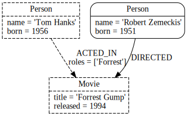

What is Graph Databse?
- A Graph database (GraphDB) is a database that uses graph structures with nodes, edges and properties to represent and store information.
- GraphDB has a completely flexible structure.

- Most importantly, GraphDB saves the relationships that connect your data.
- That means, each data record or node contains direct pointers to all the nodes that it's connected to.
Neo4j

- Neo4j stores and presents data in the form of a graph.
Data is represented by nodes and relationships between those nodes.
Here are some of the main areas that Neo4j can be used for:
- Social networks
- Realtime product recommendations
- Network diagrams
- Fraud detection
- Access management
- Graph based search of digital assets
- Master data management